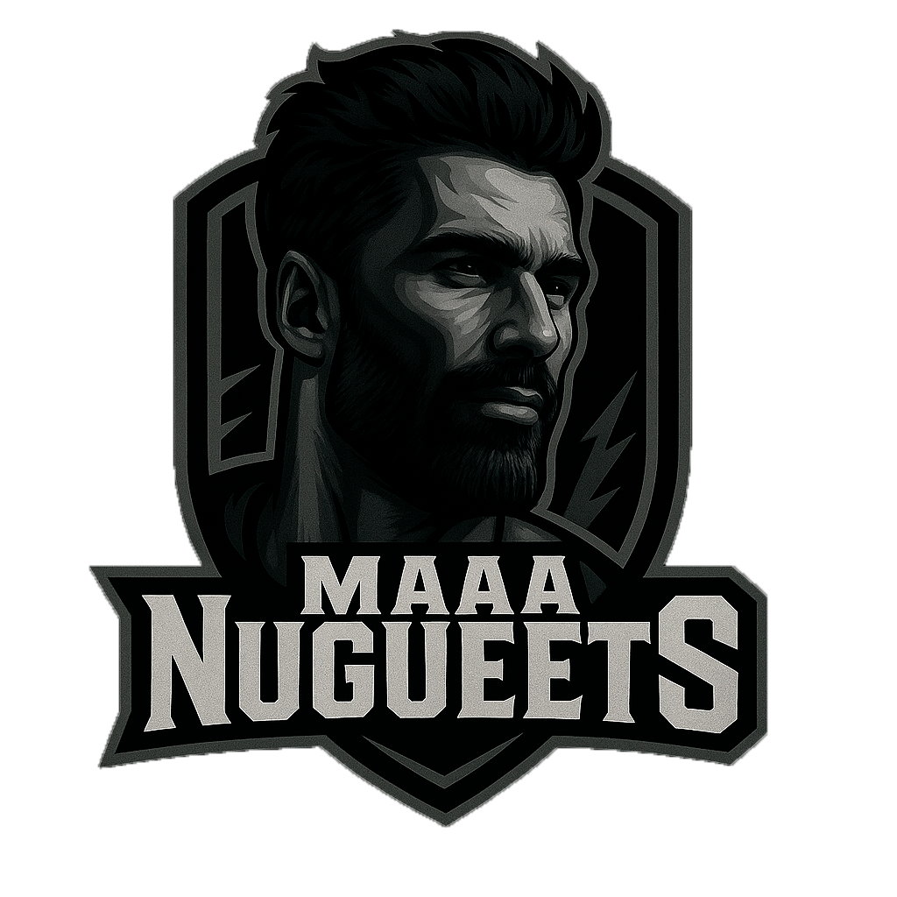
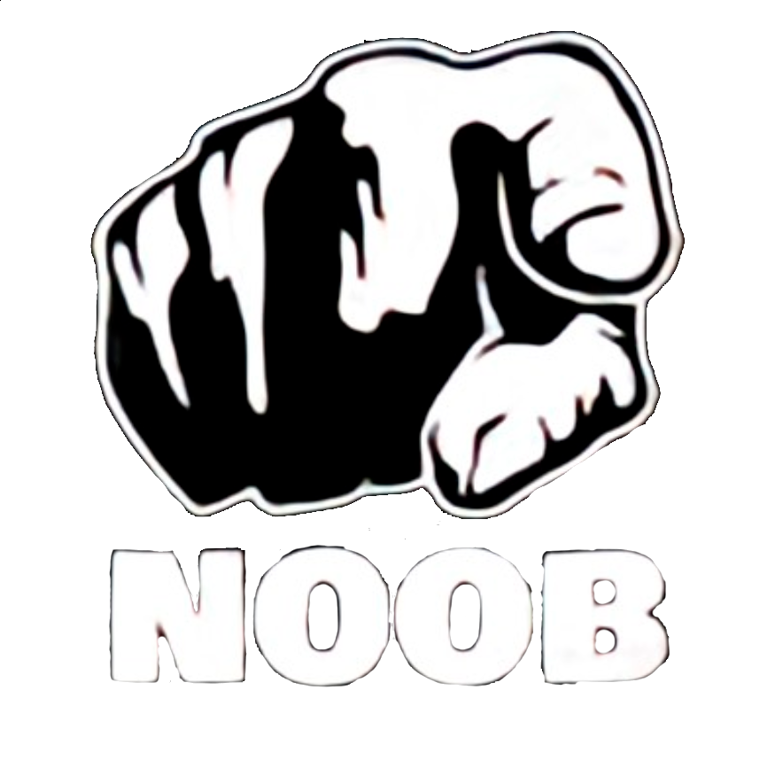
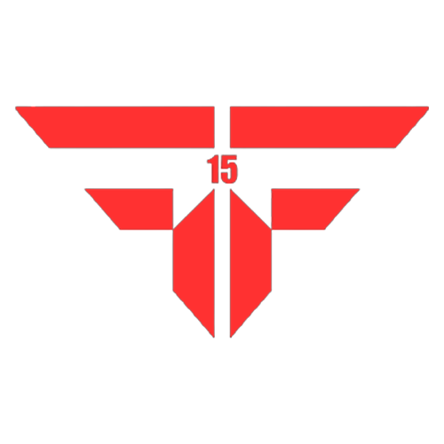

Temporada 2025 · Split de verano
El muro de los campeones
El campeón actual de La Liga del Norte. Un nombre grabado en nuestra historia.
Maaa Nugueets

Palmarés

Temporada 2025 · Split de invierno
NOOBS4WIN
Temporada 2024 · Split de verano
Monos Coruña

Temporada 2024 · Split de invierno
FF15
06
Normativa
Reglamento oficial de La Liga del Norte.
1 · Formato de la competición +
La fase regular está formada por Monos Coruña, Tarnished, Chorbitos y Maaa Nugueets. Se disputa una liga a ida y vuelta: cada equipo juega dos veces contra cada rival, con 6 partidos por equipo y 12 encuentros en total.
Todos los encuentros de fase regular son BO1. Cada jornada dispone de una ventana de 14 días y los partidos pueden adelantarse por acuerdo de ambos equipos informando a administración.
2 · Organización de los partidos +
Los capitanes acuerdan fecha y hora. Uno publica el acuerdo en el canal de partidos del Discord oficial y el otro debe confirmarlo. Desde ese momento pasa a ser la fecha oficial.
Si no existe una fecha compatible, el partido puede aplazarse sin sanción automática. Administración valorará propuestas, disponibilidad, colaboración y pruebas; podrá conceder victoria administrativa si un equipo impidió manifiestamente la organización.
3 · Puntualidad e incomparecencias +
La hora confirmada en Discord es la oficial y el encuentro comienza con el Draft. Existe un margen de cortesía aproximado de 15 minutos, interpretado con razonabilidad.
Superado el margen, el equipo preparado puede solicitar victoria por incomparecencia. Si ambos acuerdan esperar, el retraso no podrá utilizarse después como único motivo de reclamación. Se priorizará siempre resolver los partidos jugando.
4 · Plantillas, roles y capitanía +
Cada equipo puede inscribir un máximo de 7 jugadores y debe tener capitán oficial. Los jugadores pueden cambiar de posición entre encuentros.
Como mínimo 30 minutos antes se comunicarán los cinco jugadores y sus posiciones. Iniciado el Draft, la alineación del mapa queda cerrada salvo autorización excepcional. Los cambios de capitán deben notificarse.
5 · Fichajes y modificaciones de plantilla +
Las plantillas pueden modificarse libremente hasta el primer partido oficial. Después, el mercado queda cerrado.
Solo se autorizará una sustitución por baja definitiva justificada; el jugador saliente abandona el roster y nunca podrán superarse siete integrantes. No se puede utilizar esta excepción para reforzar deportivamente el equipo.
6 · Identidad de jugadores y equipos +
Cada participante utilizará la cuenta o Riot ID registrada. Queda prohibido que otra persona juegue con una cuenta inscrita.
Los equipos conservarán su nombre, escudo e identidad oficial. Cualquier modificación requiere solicitud y autorización previa.
7 · Draft +
Se realizará mediante plataforma externa y será el Draft oficial. La persona responsable facilitará los enlaces a los capitanes y administración podrá seguirlo como Viewer.
Cada selección o bloqueo dispone de 45 segundos. Una elección confirmada es definitiva, salvo fallo técnico verificable, error de configuración de administración o incidencia externa.
8 · Elección de lado +
En fase regular el primer equipo del calendario elige lado. En la vuelta se invierte el orden, garantizando una elección a cada equipo contra el mismo rival. La elección se comunica antes del Draft.
9 · Pausas +
Cada equipo dispone de un máximo acumulado de 10 minutos por partida para incidencias reales. El motivo debe comunicarse y el encuentro se reanudará en cuanto quede resuelto.
Se prohíbe utilizar pausas para obtener ventaja o cortar el ritmo. Superados los diez minutos, los equipos pueden acordar esperar; si no existe acuerdo, decide administración.
10 · Bugs, problemas técnicos y remakes +
El remake es excepcional y puede valorarse ante caídas generales, problemas graves de conexión o fallos que hagan imposible continuar razonablemente. Primero se intentará resolver mediante pausa.
Un bug menor no basta. Ante un bug grave se debe pausar e informar inmediatamente. Solo administración puede ordenar un remake completo.
11 · Prohibición de surrender +
Está prohibido utilizar Surrender/FF en cualquier encuentro oficial. Las partidas deben finalizar con la destrucción normal del Nexo. Una rendición deliberada puede ser sancionada.
12 · Clasificación y desempates +
La clasificación se decide por puntos: victoria = 3 puntos; derrota = 0 puntos.
En empate entre dos equipos se usa primero el enfrentamiento directo. Si termina 1-1 y afecta a playoffs, se juega un BO1 de desempate con lado inicial por sorteo. Administración resolverá empates múltiples.
13 · Playoffs +
Con cuatro equipos, acceden los tres primeros. La semifinal enfrenta al 2.º y 3.º en BO5; el ganador juega la Gran Final BO5 contra el 1.º.
Ambas series usan Fearless Draft Global: cualquier campeón usado queda bloqueado para ambos equipos durante el resto de la serie. Los bloqueos se reinician para la final.
En el primer mapa elige lado el mejor clasificado; después elige el perdedor del mapa anterior. Se permiten sustituciones entre mapas con jugadores del roster oficial.
14 · Incorporación de nuevos equipos +
Un equipo puede solicitar incorporarse durante la fase regular. Administración valorará calendario, partidos pendientes, disponibilidad e impacto competitivo.
Si es aceptado, empezará con 0 victorias y 0 derrotas y deberá recuperar sus encuentros. No se admitirán incorporaciones tras la fase regular o el inicio de playoffs.
15 · Posible modificación de playoffs +
El formato actual está diseñado para cuatro equipos. Si aumenta significativamente el número de participantes, administración puede ampliar plazas o eliminatorias preservando proporcionalidad e igualdad. El nuevo formato se anunciará antes de terminar la fase regular.
16 · Abandono o disolución de un equipo +
El abandono debe comunicarse. Si sucede al comienzo, administración puede retirar al equipo y anular resultados; con la temporada avanzada estudiará partidos jugados, pendientes e impacto clasificatorio para adoptar la solución más justa.
17 · Retransmisiones oficiales +
Administración organiza las retransmisiones y autoriza a casters, realizadores y colaboradores. Los equipos permitirán los espectadores oficiales. Ningún colaborador puede transmitir información a los jugadores durante la partida.
18 · Resultados oficiales +
Administración registra y comunica los resultados. Los equipos facilitarán la información solicitada y la clasificación utilizará exclusivamente los resultados oficiales.
19 · Trampas, ayudas externas y juego limpio +
Se prohíben cheats, scripts, stream sniping, suplantación, ayuda externa, asesoramiento en voz, información de espectadores, explotación de bugs y manipulación de resultados.
Durante Draft y partida solo estarán en el canal de voz los jugadores de ese mapa. Las trampas deliberadas son infracción especialmente grave y las sanciones podrán extenderse a quienes conocieran o apoyaran la conducta.
20 · Conducta y deportividad +
Se exige respeto hacia jugadores, equipos, administración y retransmisión. Pueden sancionarse insultos graves, amenazas, acoso, discriminación, hostigamiento y comportamiento antideportivo.
Se valoran contexto, intención, relación, gravedad, reiteración y reacción. Una broma no justifica continuar cuando alguien ha manifestado que le resulta ofensiva.
21 · Sanciones +
Según gravedad, intención, consecuencias y reincidencia, las medidas pueden ser aviso, suspensión, pérdida administrativa de partidos o puntos y expulsión de un jugador o equipo.
No es obligatorio aplicar sanciones progresivamente: una infracción grave puede recibir directamente una sanción elevada.
22 · Reclamaciones +
Las realiza preferentemente el capitán, en privado, dentro de las 24 horas posteriores. Deben explicar los hechos e incluir pruebas cuando sea posible.
Fuera de plazo, administración no está obligada a admitirlas, aunque puede hacerlo excepcionalmente o investigar de oficio hechos graves contra la integridad competitiva.
23 · Casos no contemplados +
Administración resolverá situaciones no previstas aplicando buena fe, proporcionalidad, igualdad e integridad competitiva. Podrá solicitar pruebas y sus decisiones serán vinculantes.
24 · Modificaciones de la normativa +
Administración puede modificar o aclarar las reglas durante la temporada. Los cambios relevantes se comunicarán públicamente y, como norma general, no tendrán efectos retroactivos.
25 · Comunicaciones oficiales +
El Discord oficial es el principal medio de comunicación. Los capitanes deben mantenerse informados y trasladar las comunicaciones relevantes a sus jugadores.
26 · Aceptación de la normativa +
Participar en la Liga del Norte 2026/27 implica aceptar íntegramente estas reglas. El desconocimiento no exime de su cumplimiento y continuar tras una modificación comunicada supone aceptarla.
Principio general de la Liga del NorteLa normativa se aplica con sentido común, proporcionalidad y buena fe. Siempre que exista una solución justa, se priorizará resolver la competición jugando dentro de la Grieta antes que mediante tecnicismos o victorias administrativas.
La finalidad de estas normas es proteger la competición, no buscar maneras de ganar fuera de ella.
04
Jugadores
Participantes confirmados por alineaciones, con KDA medio, picks y acceso a OP.GG.
03
Equipos
Los clubes que compiten por conquistar el norte.
02
Calendario
Temporada 2026/27 · Fechas, resultados, alineaciones, KDA y retransmisiones.
05
Récords
Los récords, las barbaridades y las historias que está dejando la temporada.
◆
Los promedios, ratios y porcentajes de campeones, jugadores y equipos exigen un mínimo de 2 partidas. Los récords absolutos y de partidas usan todos los datos. En caso de empate, gana quien tenga más encuentros disputados; si continúa, se muestran todos.
01
Clasificación
Temporada 2026/27
Pos.EquipoPJVDPts.
PuntuacionesVictoria · 3 puntosDerrota · 0 puntosDesempate · enfrentamiento directo / BO1 si afecta a playoffs